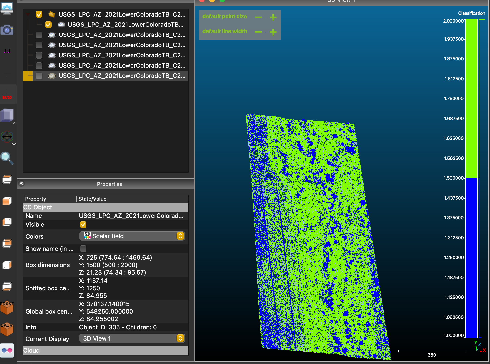

DEM Generation from LiDAR Ground Points Using Cloud Compare and QGIS3




This project involved generating a Digital Elevation Model (DEM) for a segment of the Lower Colorado River near Yuma, Arizona, using publicly available LiDAR data and open-source geospatial tools. The goal was to demonstrate a full workflow from raw point cloud to georeferenced elevation model.
The workflow involved:
- Downloading and preprocessing USGS LiDAR data in CloudCompare
- Filtering ground-classified points and rendering a grayscale elevation PNG
- Manually georeferencing the image in QGIS using terrain features visible in Google Earth Pro
- Generating a rasterized elevation layer and applying DEM symbology
- Running statistical summaries and styling the output for interpretation
Applications & Skills Demonstrated
This project showcases the ability to turn raw LiDAR data into meaningful terrain outputs using open-source tools, applicable to:
- Floodplain analysis and flood risk mapping
- Habitat and riparian zone restoration planning
- Preliminary terrain modeling for civil infrastructure projects